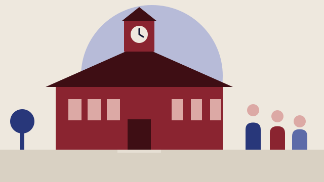

Besluttet 2. september, Udvalget for Sundhed, Pleje og Forebyggelse, Frederikshavn
Forebyggende sundhedsindsatser for børn og familier i 2026-2028
Center for Dagtilbud og Børnesundhed indstiller følgende til godkendelse, at der: 1. arbejdes videre med indsatsen "Forældreforløb til styrket tryghed og udvikling hos børn". 2. arbejdes videre med indsatsen "Nikotinforebyggelse i skole og forældresamarbejde".
Skoler og børnÆldre og sundhed

Kort fortalt
- Hvem
- Udvalget for Sundhed, Pleje og Forebyggelse, Frederikshavn Kommune
- Hvornår
- Onsdag 2. september 2026
- Status
- Besluttet. Godkendt. Udvalget ønsker en kvalitativ opfølgning baseret på en før- og efterundersøgelse.
Læs hele sagen Kommunens egen tekst
Sagsfremstilling
Den Kommunale Tandpleje har hentet en reduktion tidligere end forventet. Reduktionen
er på ledelse og omlægning af opgave, som giver et forventet midlertidigt mindreforbrug
på 550.000 kr. i 2026-2028. Det giver mulighed for, at der i kommende to år kan
målrettes tidlig forebyggende indsatser. Midlerne bortfalder efter perioden og kan derfor
ikke anvendes til varig drift.
Administrationen har udarbejdet et katalog med seks mulige sundhedsindsatser inden for
tidlig forebyggelse, forældrestøtte, gode overgange i barnets liv samt deltagelse i
fællesskaber og fritidsliv.
Kataloget bliver præsenteret på mødet og omfatter:
• Forældreforløb til styrket tryghed og udvikling hos børn
Bevægelsesforløb for inaktive børn med bro til foreningslivet
Udvidelse af svømmetilbud med fokus på trivsel og bevægelse
Udvidet sundhedspleje i dagtilbud
Udvidet nikotinopsporing blandt unge
Nikotinforebyggelse i skole og forældresamarbejde
Administrationen vurderer, at følgende to indsatser bør prioriteres i perioden:
Forældreforløb til styrket tryghed og udvikling hos børn, som har fokus på at
styrke forældres forståelse af og evne til at møde barnets behov for tryghed,
udvikling og tilknytning. Indsatsen understøtter kommunens fokus på tidlig
forebyggelse og giver samtidig mulighed for kompetenceudvikling og videre
forankring af viden i organisationen.
Nikotinforebyggelse i skole og forældresamarbejde, som omfatter udvikling eller
indkøb af undervisningsmaterialer, aktiviteter for elever og information til forældre
med henblik på at forebygge nikotinbrug blandt børn og unge. Indsatsen vurderes
som en aktuel forebyggelsesopgave og kan gennemføres med anvendelse af
tidsbegrænsede projektmidler.
De øvrige indsatser vurderes ligeledes relevante, men administrationen anbefaler, at de
indgår som mulige udviklingsspor på længere sigt eller vurderes nærmere på baggrund af
erfaringerne fra de prioriterede indsatser.
Administrationen anbefaler samtidig, at der afsættes midler til kompetenceudvikling,
materialer samt evaluering af de valgte indsatser. Formålet er at styrke vidensgrundlaget
for fremtidige beslutninger. Forældrene skal desuden inddrages aktivt i både
gennemførelse og evaluering af de relevante indsatser.
Indstilling
Center for Dagtilbud og Børnesundhed indstiller følgende til godkendelse, at der:
1. arbejdes videre med indsatsen "Forældreforløb til styrket tryghed og udvikling
hos børn".
2. arbejdes videre med indsatsen "Nikotinforebyggelse i skole og
forældresamarbejde".
Beslutning
Godkendt.
Udvalget ønsker en kvalitativ opfølgning baseret på en før- og efterundersøgelse.
Bilag
- 1. Vores Sunde Hverdag - et kommunalt sundhedsfremmeprojekt - kommunesituationsanalyse 2022
Kilde: Frederikshavn Kommune, Udvalget for Sundhed, Pleje og Forebyggelse, referat fra mødet onsdag 2. september 2026, punkt 2. Læs den originale sag hos kommunen.